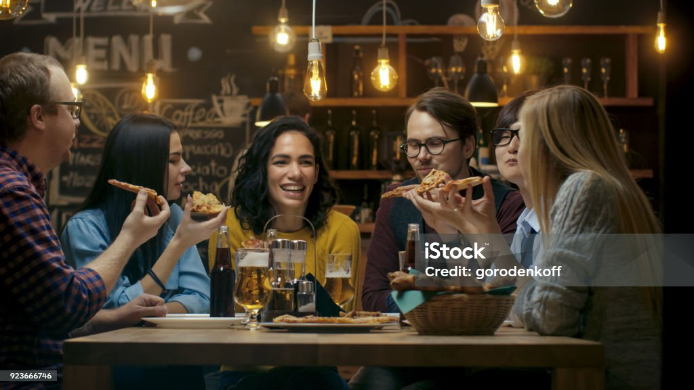

Pizzeria
Mamma

Pizzeria Mamma est un restaurant italien chaleureux et convivial, réputé pour ses délicieuses pizzas préparées selon la tradition italienne. Avec des ingrédients frais et soigneusement sélectionnés, une pâte artisanale et des recettes authentiques, l’établissement offre une véritable expérience gastronomique italienne. Que ce soit pour un repas en famille, un dîner entre amis ou une pause gourmande, Pizzeria Mamma séduit ses clients par la qualité de sa cuisine, son ambiance accueillante et son service attentionné.